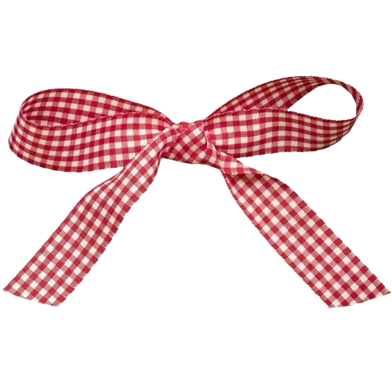
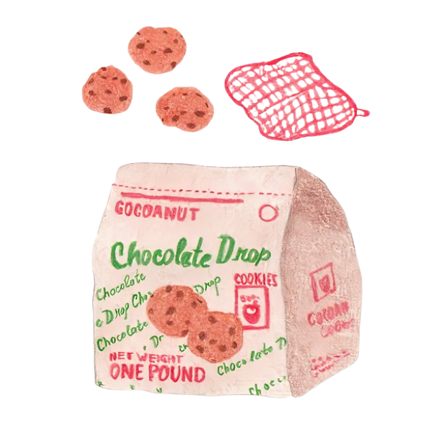

Unas deliciosas galletas crujientes por fuera y suaves por dentro.
Ingredientes

1/2 taza de mantequilla sin sal
3/4 taza de azúcar moreno oscuro
1/2 taza de azúcar granulada
1/2 cucharadita de sal kosher
1 cucharadita de polvo de hornear
1/2 cucharadita de bicarbonato de sodio
2 huevos
2 1/2 tazas de harina para todo uso
1 taza de chispas de chocolate oscuro y semi amargo
1/2 taza de nueces troceadas

Instrucciones
Batir los ingredientes secos: en un tazón grande, tamiza la harina, el bicarbonato de sodio y el polvo de hornear. Deja reposar.
Batir la mantequilla con los azúcares: en el tazón de una batidora de pie, bate la mantequilla con el azúcar, la sal y el azúcar moreno durante aproximadamente 8 minutos a velocidad media-baja.
Agregar los huevos: agrega los huevos, uno a la vez, batiendo bien después de cada adición.
Agregar los ingredientes secos: con la batidora a baja velocidad, incorpora poco a poco la mezcla de ingredientes secos hasta que se integren bien.
Agregar las chispas de chocolate y las nueces: agrega las chispas de chocolate y las nueces troceadas y mezcla suavemente hasta que estén distribuidas uniformemente en la masa.
Porcionar la masa: usa una balanza de cocina para formar 12 bolitas de masa de aproximadamente 156 g (5.5 oz) cada una. No las aprietes demasiado para mantener su forma crujiente y rústica.
Reposar la masa: coloca las bolitas de masa en un recipiente con papel pergamino y refrigéralas durante al menos 6 horas o durante la noche para mejores resultados.
Hornear: precalienta el horno a 180°C (350°F). Coloca las bolitas de masa en una bandeja para hornear con papel pergamino, dejando espacio entre ellas. Hornea de 20 a 25 minutos o hasta que los bordes estén dorados. Usa un termómetro de cocina para verificar que la temperatura interna llegue a 180°C.
Dejar enfriar: deja las galletas enfriar 5-10 minutos en la bandeja y luego transfiérelas a una rejilla para que se enfríen por completo.